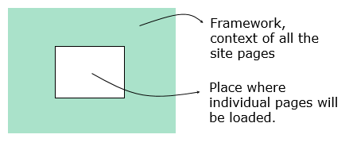
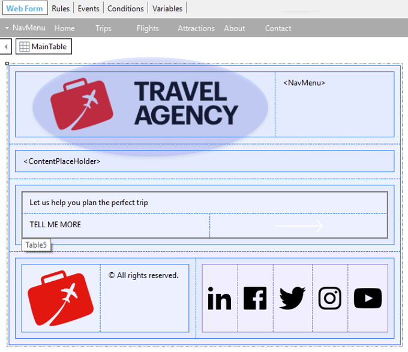

Defines the layout and the behavior common to the referenced application UI screens. In other words, it specifies the framework or context and the behavior of the application UI screens that reference it.  What is a Master Page inside GeneXus?A Master Pages is a Web Panel object that has the Type property set to Master Page. You may define as many Master Pages as you want in your Knowledge Base. By default, every Knowledge Base contains some Master Pages automatically created. One of them is named RwdMasterPage and it is referenced in the Default Master Page property at version level. Besides, every Web Panel object and Transaction object contains the Master Page property to set there its Master Page. By default when you create a Web Panel or Transaction, its Master Page property is set with the Default Master Page property value. This is the reason why all the Web Panels and Transactions you create take the RwdMasterPage Master Page by default and you can see that the whole application maintains the same style, and reuse the same aesthetics, without having worried about achieving this. Of course, you can modify those properties values by other Master Pages created by you. Master Page creationBy selecting in the main GeneXus menu File > New Object, the New Object Dialog is opened. There, you have to select the Web category, and you are offered to create a Master Page. Every Master Page must contain a ContentPlaceHolder control (this is the only mandatory control in a Master Page) to define where on the Master Page the content of each Web Panel or Transaction will be placed. Observe the following Master Page:  The desired design was analyzed to define which controls to insert and where. The images were provided by designers, and they were created as images in the KB. A Responsive Table was inserted (they are the ones used by default) to include the application logo and menu. Also, the Table5 is a responsive table inserted to contain the texts and the white arrow. This table has a class assigned, which has the background color (indicated by designers) configured. Note that the ContentPaceHolder control was inserted in the desired place. All these definitions and more details are part of a defined Design System. On a Master Page, you can also include Rules, Events, Conditions, and any other component of a common web page, with the purpose of adding common behavior. For example, some aspects as security or auditing can be implemented in a Master Page. A Master Page is defined, specified and generated independently. So if you want to modify the layout (for example, changing the footer), all you need to do is modify/generate the Master Page and not any object referencing it. Benefits offered by Master Pages
ConsiderationsEvents sequenceWhen executing a Web Panel or Transaction associated with a Master Page, events are triggered in the following sequence:
Referencing object informationWhen programming the Master Page, you may need information about the contained object. The information is available through properties of the Content Placeholder control. These properties are:
RestrictionsA Master Page is a regular Web Panel (it can even have Web Components), but needs to comply with the following restrictions:
Other restrictions:
VideosDesig Systems in GeneXus. Fontend: Master Page. See alsoMaster Page property |